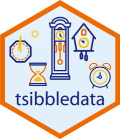

tidyverts
Home
Packages
Tidy tools for time series.
Packages
tsibble
Temporal data frames and tools
fable
Tidy forecasting
feasts
Feature extraction and statistics

tsibbledata
Diverse datasets for tsibble
fable.prophet
Interface to prophet forecaster for fable
fable.binary
Forecasting binary time series
tsibbletalk
Interactive crosstalk graphics for tsibble